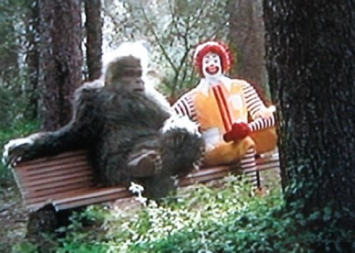

Bigfoot is real, and there's now both DNA and video evidence to prove it, claims one group of devoted Sasquatch researchers. The group's "never-before-seen footage" of an alleged Bigfoot creature sleeping in the woods of Kentucky has been presented this week along with various blood and hair samples said to be unlike anything seen before. The group's startling statements are supposedly backed by 11 outside laboratories and universities, which all reviewed the findings, and which were provided with blind samples, according to the report by the Sasquatch Genome Project. "We want people to understand that this is a serious study," Dr. Melba Ketchum, a genetics scientist, who led the project during the course of the five-year study, told CBS DFW. Unsurprisingly, others are challenging Ketchum's credibility, including New York University whose laboratory Ketchum claims similarly tested a field sample and found it having usual human mitochondrial results. Among the genetic and visual findings presented by the group in Dallas on Tuesday is video of what is described as "a reddish brown Sasquatch juvenile" sleeping in the woods after being tracked with her mother.
